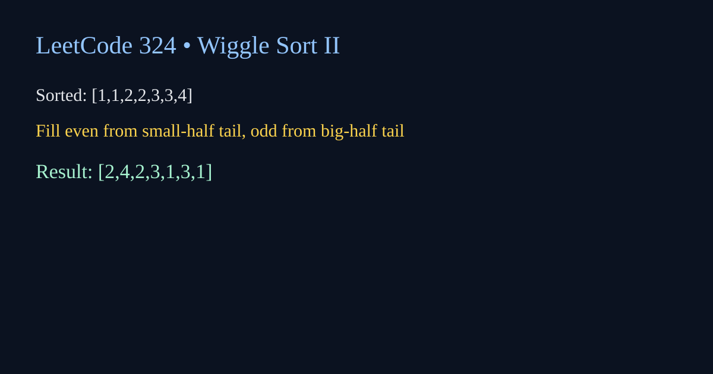

LeetCode 324: Wiggle Sort II (Median + Virtual Indexing)
LeetCode 324Source: https://leetcode.com/problems/wiggle-sort-ii/

English
Reorder nums so that nums[0] < nums[1] > nums[2] < nums[3].... A practical solution sorts the array, then fills even indices from the end of the smaller half and odd indices from the end of the larger half.
import java.util.*;
class Solution { public void wiggleSort(int[] nums){int[] a=nums.clone();Arrays.sort(a);int n=nums.length,l=(n-1)/2,r=n-1;for(int i=0;iimport "sort"
func wiggleSort(nums []int){a:=append([]int(nil),nums...);sort.Ints(a);n:=len(nums);l,r:=(n-1)/2,n-1;for i:=0;iclass Solution{public:void wiggleSort(vector<int>& nums){vector<int> a(nums);sort(a.begin(),a.end());int n=nums.size(),l=(n-1)/2,r=n-1;for(int i=0;iclass Solution:
def wiggleSort(self, nums):
a=sorted(nums); l=(len(nums)-1)//2; r=len(nums)-1
for i in range(len(nums)):
if i%2==0: nums[i]=a[l]; l-=1
else: nums[i]=a[r]; r-=1var wiggleSort=function(nums){const a=[...nums].sort((x,y)=>x-y);let l=(nums.length-1)>>1,r=nums.length-1;for(let i=0;i中文
目标是重排为 nums[0] < nums[1] > nums[2] < nums[3]...。实用解法是先排序，再把较小半区从后往前填偶数位，把较大半区从后往前填奇数位，避免相邻冲突。
import java.util.*;
class Solution { public void wiggleSort(int[] nums){int[] a=nums.clone();Arrays.sort(a);int n=nums.length,l=(n-1)/2,r=n-1;for(int i=0;iimport "sort"
func wiggleSort(nums []int){a:=append([]int(nil),nums...);sort.Ints(a);n:=len(nums);l,r:=(n-1)/2,n-1;for i:=0;iclass Solution{public:void wiggleSort(vector<int>& nums){vector<int> a(nums);sort(a.begin(),a.end());int n=nums.size(),l=(n-1)/2,r=n-1;for(int i=0;iclass Solution:
def wiggleSort(self, nums):
a=sorted(nums); l=(len(nums)-1)//2; r=len(nums)-1
for i in range(len(nums)):
if i%2==0: nums[i]=a[l]; l-=1
else: nums[i]=a[r]; r-=1var wiggleSort=function(nums){const a=[...nums].sort((x,y)=>x-y);let l=(nums.length-1)>>1,r=nums.length-1;for(let i=0;i
Comments